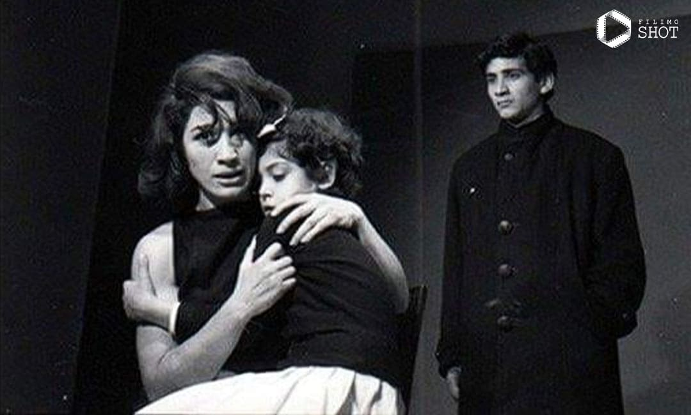
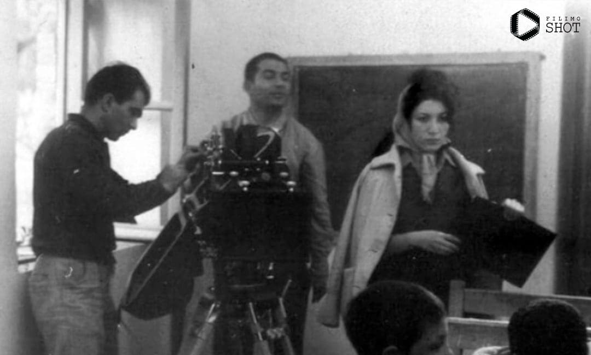
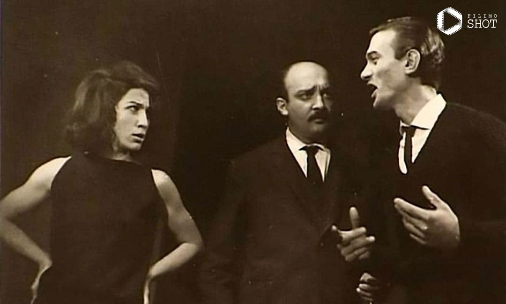

«خانه سیاه است» در استودیو گلستان ساخته شد و تهیهکننده آن یعنی ابراهیم گلستان، خود مستندسازی درجه یک بود که بعد از دریافت سفارشی از انجمن حمایت از جذامیان، کارگردانی آن را به زنی واگذار کرد که پیش از آن هیچ تجربهای در ساختن فیلم مستند نداشت. درواقع گلستان با اعتماد به فروغ و با سپردن این کار به او، دست به ریسک بزرگی زد چرا که اگر فروغ آن را بد میساخت و کار را خراب میکرد؛ همه اعتبار استودیو گلستان و سابقه چندین ساله آن برباد میرفت اما فروغ به خوبی از پسِ این آزمون سنگین برآمد و مستندی زیبا برای استودیو گلستان ساخت؛ مستندی که دارای سبک سینمایی جسورانه و نگاهی انسانی و انتقادی به یک ناهنجاری اجتماعی بود.
مشاهده فیلم خانه سیاه است
مستند خواستگاری با بازی فروغ فرخزاد. این مستند کوتاه در واقع بخشی از مستند یکساعتهای است به نام Courtship که در سال ۱۹۶۱ با همکاری چهار کارگردان بنام از کشورهای ایران، ایتالیا، هند و کانادا ساخته شده و هدفش آشنایی با رسوم خواستگاری و آشنایی دختر و پسر در این کشورها و فرهنگها است. در این فیلم میتوانید بخشهایی از گفتوگوهای بازیگران از جمله فروغ فرخزاد را به وضوح بشنوید. «خواستگاری» عنوان فیلم کوتاهی است به کارگردانی ابراهیم گلستان و تهیهکنندگی سازمان فیلم گلستان که در سال ۱۳۴۰ به سفارش مؤسسهٔ ملی فیلم کانادا تهیه شد.
مشاهده مستند خواستگاری
فروغ فرخزاد خودش را فقط به شاعری، تدوین، بازیگری و فیلمسازی محدود نکرده بود و تجربه فیلمنامهنویسی هم داشت. فیلمنامهای که البته هیچوقت به مرحله ساخته شدن نرسید و اطلاعات زیادی درباره آن منتشر نشد اما ظاهرا قرار بوده است در سازمان فیلم گلستان ساخته شود. فروغ در نامهای به برادرش فریدون که در آلمان تحصیل میکرده، به این فیلمنامه اشاره کرده است: «نزدیک به ۱۰۰۰ صفحه سناریو نوشتم که یک فیلم بسازم ولی میماند برای سال بعد. میترسم که زودتر از آنچه فکر میکنم بمیرم و کارهایم ناتمام بمانند.» او در جای دیگری توضیح میدهد: «در این سناریو من سعی کردهام زندگی حقیقی زن ایرانی را نشان بدهم. دلم میخواهد این فیلم در یکی از این خانههای قدیمی ایرانی فیلمبرداری شود. خانههایی که اتاقهایش تودرتو است. من این خانهها را در کاشان دیدهام.»